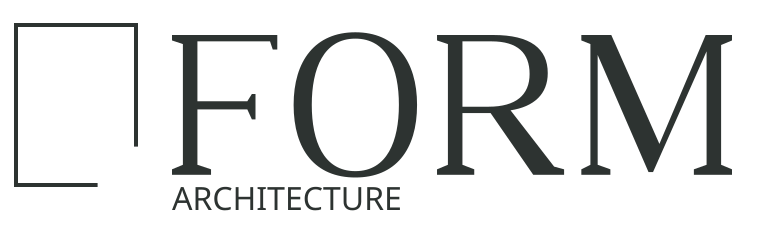

Line Studio
Workplace study · 2026 · 180 m². Shared work and quiet concentration occupy connected zones.

Light, material, movement, and use. A thoughtful relationship between space and daily life.
Explore the studies
These are fictional architectural studies made for a self-initiated studio project. Open a full image to inspect the spatial idea.
Workplace study · 2026 · 180 m². Shared work and quiet concentration occupy connected zones.

Cultural-space study · 2026 · 620 m². A shaded threshold connects gathering and reading.
This is a local website demonstration. Enable JavaScript to explore the project stories, edit project content, or preview an enquiry receipt. No enquiry is sent from this site.
هذا موقع تجريبي محلي لمشروع أنشأه الاستوديو بمبادرة ذاتية. فعّل JavaScript لاستكشاف الدراسات وتعديل المحتوى ومعاينة تأكيد تجريبي للاستفسار. لا يرسل الموقع أي استفسار.